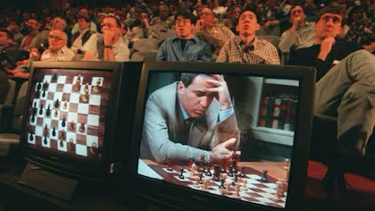
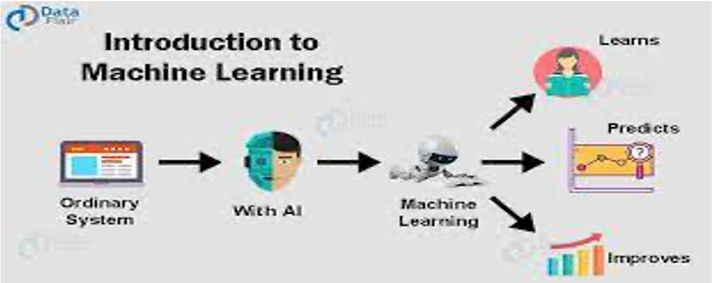
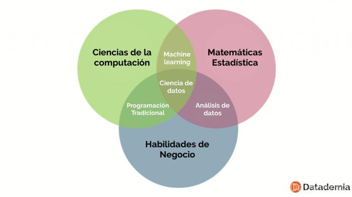
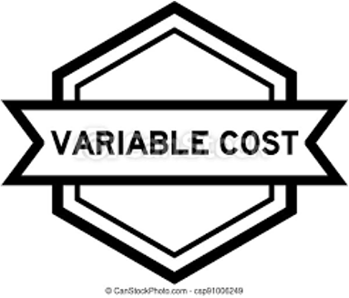
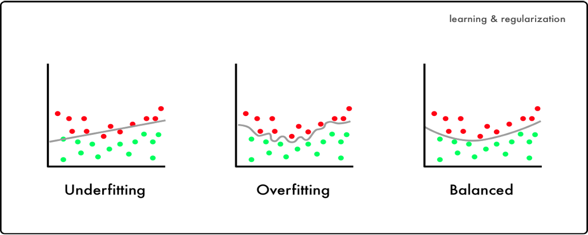

Ciencia de Datos 🐧
Historia de la IA
Al empezar con la programación de ordenadores mediante algoritmos, en 1950 Alan Turin propone el test de Turing, el cual propone que si no puedes diferenciar entre conversar con un humano y una maquina, entonces, nos encontramos ante un nuevo concepto, algo interesante para su época.

Historia de la IA
Ante esto, McCarty en 1956 acuña el término
Inteligencia Artificialpor primera vez en la historia.Al siguiente año, Rosenblat desarrolla Eliza, la primera red neuronal para un chatbot.

Historia de la IA
En 1996 Minsky crea el concepto de perceptrones, la arquitectura básica empleada a día de hoy en redes neuronales, aunque debido a la limitación computacional de la época y que necesitaban muchos datos, su concepto queda en archivo, empezando un
inverno en la IA.En 1996 la IA renace gracias a Deep Blue, venciendo al campeón mundial humano de ajedrez.

Historia de la IA
En 2012, Google construyo un superordenador que aprende a reconocer caras de gatos y humanos y se empezo a popularizar
AlexNetcon resultados satisfactorios.En 2014 por primera vez una IA supera el test de Turing, y Goodfellow crea el concepto de
GAN,la primera IA que crea imágenes por si misma.En 2015 se supera al campeón mundial humano de
Go, un juego muy complicado.
Historia de la IA
- En 2017 Google crea una arquitectura que reduce la capacidad de memoria necesaria y aumenta el rendimiento de los modelos de redes neuronales, creando el concepto de
atention. - En 2020 se crea la IA
Stable Diffusion,revoluicionaria de los GAN, que permite crear imagenes con texto. - En 2022 OpenAI pone al público el uso de ChatGPT, NVIDIA pone a la venta tarjetas gráficas súper potentes, empiezan a dar popularidad a las aplicaciones independientes de IA, etc…
Qué no es IA?
Calculadoras
Software o lenguages de programación
Programación de Reglas Específicas
Sensores
Reconocer una figura geométrica en imagenes.
Códigos QR
Nota: pero pueden tener IA
Qué si es IA?
- Chatbot autónomo.
- Voz a texto (y viceversa).
- Asistentes virtuales (Alex, Siri, etc.)
- Cualquier generador automático.(música, imágenes, resúmenes, etc…)
- Navegador inteligente, traductor.
Nota: existen ocasiones en que una tarea parece sencilla, pero, tiene un modelo súper complejo detras de lo que la hace sencilla.
Investigación en IA
- Descubrimiento: entrenar un modelo nunca antes entrenado.
- Teórica: algortimos, mejoras en rendimiento.
- Aplicada: despliegues para terceros.

Complicaciones en IA
Recolección de datos.
Etiquetado de datos.
Sesgos (calidad de los datos: racismo, machismo, preferencias especificas, corrupción).
Ética (protección de datos, usos finales, externalidades dependen de IAs).
Velocidad de entrenamiento.
Velocidad de respuesta.
Explicabilidad.
Otros conceptos

Etapas para el procesamiento de datos
OBTENER DATOS
Transformar de otros programas o lenguajes
Descargar de la web (web scraping)
PROCESAR DATOS
Ordenar lo obtenido
Dar el formato requerido
Limpiar impurezas de las bases
ANALIZAR DATOS
Data Mining
Econometría
Machine Learning
Deep Learning
REPORTAR DATOS
Crear reportes con gráficos en una tabla en Exce, word o un dasboard.
Aprendizaje Autómatico (Machine Learning)
Conjunto de técnicas que se emplean para crear IA.
Se clasifica en aprendizaje supervisado y no supervisado.
El supervisado se divide en: continuo, conteo, binario, multi clase, multi label
Su fin es predecir algo.

Minería de datos
Este término muchas veces lo confunden con machine learning y ciencia de datos.
Se refiere a la obtención de nuevo conocimiento práctico gracias a los datos.
Su fin es explicar el por qué de algo.
Ciencia de datos
Es la aplicación específicada de IA a un campo de estudio, con el fin de aplicar teoría o conocimiento a la IA, para que no sea tan
"no explicada".Normalmente se confunde con decirle IA más a una profesión específicada como medicina, marketing o telecomunicaciones, pero, esto aplica a cualquier carrera.
Su fin es aplicar el conocimiento para mejorar la predicción o el porqué de algo.

Requisitos computacionales mínimos para machine learning
8 GB de RAM
256 GB de SSD
4 núcleos de procesamiento
Procesador Core i5
4 GB dedicados de GPU
Con qué hacer IA / Ciencia de datos
- Con cualquier lenguaje de programación es posible, pero, principalmente se usan:
Python,Java,C++,JuliayRubí. - Como un lenguaje de programación no tiene interfaz pre definida, se pueden instalar varias como
SpyderoJupyter Notebooks. - Como la IA son modelos matemáticos complejos, se puede emplear alternativamente Python en la nube de forma gratuita como
Google ColaboKaggle.
- Finalmente, si los recursos gratuitos no cubren tu demanda, puedes comprar máquinas potentes o pagar por su alquiler en la nube como
Google Cloud,AWS,Azure, etc.
Recuerden
Un modelo no siempre será el mejor al inicio, pero, para eso está la mejora continua.
Sean creativos al crear modelos.
Cualquier problema es aplicable.
Nunca descarten emplear modelos qua ya existen, así como nunca descarten hacer sus propios modelos.
Preparación y algoritmo para un buen modelo
A la variable por predecir \(Y\) se le conoce como: dependiente, label, explicada, de interés, output.
A la o las variables para predecir se le puede decir: independiente \((X)\), features, características, input.
Dataset: base de datos.
Tipos de investigación
Machine Learning
Busca predecir.
Usa muchas variables para explorar.
No es necesariamente explicable.
El producto es un modelo que genere outputs precisos.
Ciencia de Datos
Busca explicar y predecir.
Usa variables teóricas y a veces adicionales.
Siempre busca explicar.
El producto es un modelo que tenga equilibrio entre lo que genera y lo que explica.
Minería de datos
Busca explicar y predecir.
Usa variables teóricas y a veces adicionales.
Siempre busca explicar.
El producto es un modelo que tenga equilibrio entre lo que genera y lo que explica.
Recolección de Dataset
tener una idea de investigación es el primer paso:
Puedo predecir si el precio de una acción subirá mañana ?
Puedo predecir si alguien me ama en base a nuestro chat?
Puedo crear un modelo para detectar armas en una foto?
Pero, sin un dataset nuestra idea nunca se podrá producir.
Datos sin sesgo
Un buen modelo depende de un buen dataset.
El modelo aprende lo que le enseñamos, si le enseñamos mal…
Debemos diferenciar entre patron y sesgo.
Ejemplos: enseñar brechas de género, especificaciones de raza a una carrera, etc.
Etiquetas Correctas
Existen estudios con una label sencilla, como etiquetar si una imagen es un gato o un perro, a que precio se vendió una casa.
Otros no lo son tan directos y puede ser hasta subjetivo, como etiquetar si un correo es spam, si un texto es ofensivo, si un registro es una anomalía….
Importante considerar si necesitarás un experto en la materia o no para esta labor.

Estimación de Modelos
A partir de aquí si depende de nuestras habilidades.
Verificar que no hayan missings y estandarizar variables.
TODOS los modelos persiguen lo mismo, lo que se cambia es la forma de conseguirlo, pero, todos siguen lo siguiente:
\[Y_i = f(X_i)\]Lo que cambia es \(f(X_i)\) o la forma que lo consideramos
Entonces, probaremos varios modelos hasta encontrar un
ganador.El ganador se decide en base a
métricasque dependen de la variable dependiente y nuestro objetivo particular
Delimitando nuestra data
Entrenamiento (
Train): parte de mi data que me sirve para estimar el modelo.Prueba (
test): parte de mi data que sirve para validar el modelo.Nueva data (
Wild): la data que falta no tiene label y por ende debo predecir, y no sabré los resultados hasta que llegue el día de presentarse dicho escenario.Frecuentemente se usa
Split:
Tus datos (Conozco \(Y\)) No tus datos (No conozco \(Y\)) Train (estimar modelo) | Test (probar modelo) Wild (probar modelo) Eficiencia conocida | Eficiencia conocida Eficiencia Desconocida
Ajustes en Modelos
Underfitting (
subajuste): no entrené lo suficiente al modelo.Overfitting (
sobreajuste): entrené demasiado al modelo y no hay posibilidad a nuevos casos.Balanced (
balanceado): entrené lo suficiente al modelo y predice bien nueva data.

Consideraciones
- Lo anterior es como escoger un modelo, pero, recordar que tendrán un resultado diferente si varían en:
- La muestra (split)
- Las features
- Las transformaciones de features
- Los hiperparámetros por calibrar
- La muestra (split)
- Aquí viene lo importante que es
automatizar al programar.
Luego que gana un modelo?
Se debe
guardar los parámetrosen el formato que consideren, normalmente se usa.pklpara modelos con datos estructurados.Luego de guardar, lo puedes pasar a un sistema o pagina web para que cuando alguién más llene l
os mismos inputs le retorne un output, y luego toca esperar que sea una buena predicción.Recordar que la ganancia es que todo esto es automático y
para grandes cantidades de datos.También pueden venderlo.
Qué más continuaras viendo aquí?
- A partir de aquí sigue estudiar
los tipos de variables dependientes. - Cada modelo, ventajas y desventajas.
- Estudiar las métricas pertinentes.
- Aprender los tipos de calibración.
- Salir de los datos estructurados ( un Excel por así decirlo) e ir a textos, sonidos e imágenes y volver a los primeros 4 puntos.
- Luego de lo anterior, aprender sobre
modelos más complejos (Deep Learning)y repetir el punto 5.
Empezaremos a ciegas con…
- Se realizará tanto en local como Google Colab.
- Un poco de estadística descriptiva.
- Problema de aprendizaje supervisado con variable explicada continua.
- Modelo de regresión lineal, support vector machine y árbol de decisión.
- Métrica de \(R^2\) y \(MSE\)
- Guardar y probar modelo.
Procesos
- Importar librerías.
- Cargar datos:
pd.read_excel() - Limpiar….
- Separar base:
train_test_split() - Estimar modelo: model =
modelo().fit(x_train, y_train) - Predecir: y_pred_test =
model.predict(X_test) - Scores:
model.score(X_train, y_test) | mse(y_test, y_pred_test)
Consideraciones al pasar a Colab
- Recuerden subir su archivo cada vez que inician sesión o tenerlo en Google Drive.
- Borrar os.chdir() porque no es su computadora.
- Colocar
!pip install paquetesi les genera error por falta de paquete. - Listo!